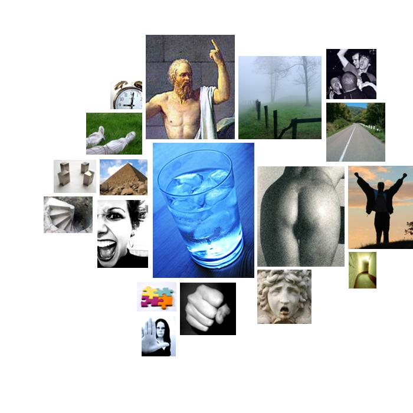

carter.txt
  cold
cold cold, north, northeast, polarizes
 moral_imperative
moral_imperative right, honest, principles, honor, duty, honor, respect, rights, virtually, principles, rights, justice, justice, principles, principles, should, rights, duty
 anality
anality shattered
 diffusion
diffusion mistakes, mistreat
 glory
glory principles, proud, victory, greatness, proud, principles, admired, extremism, principles, extremism, principles, extremist, great
 voyage
voyage shipmates, sailors, shipmate
 anxiety
anxiety horrors, horrors, cowardly, terrorism, terrorism, panic, terrorism, avoiding
 aggression
aggression combat, war, harm's, wars, war, shattered, hostile, violated, wounded, attack, combating, war, enemies, disturbing, war, resenting, war, violence, threat, stability, mistreat, war, wars, disturbing
 sadness
sadness discouraged, despair
 chaos
chaos confused
 passivity
passivity security, security, secure, security, security, security
 depth
depth submarine, under, deep
 timelessness
timelessness century
 order
order former, series, former, stability, divides
 restraint
restraint assigned, taxation, policies, determined, policies, halt, requires, prevail
 abstraction
abstraction know, chosen, different, knew, judgment, choice, sure, distinction, knows, judgment, know, reason, important, truth, basic, truth, truth, determined, understanding, mistakes, basic, understood, difference, meantime, comprehensive, real, consequences, basic, differences, true, proven, proven, doctrines, truth, define, believe
 unknown
unknown transcend
 temporal_references
temporal_references everything, years, ago, then, again, tonight, time, time, when, today, former, when, today, today, when, months, months, meantime, time, former, ago, now, immediate, daily, when, already, while, months, year, months, tonight